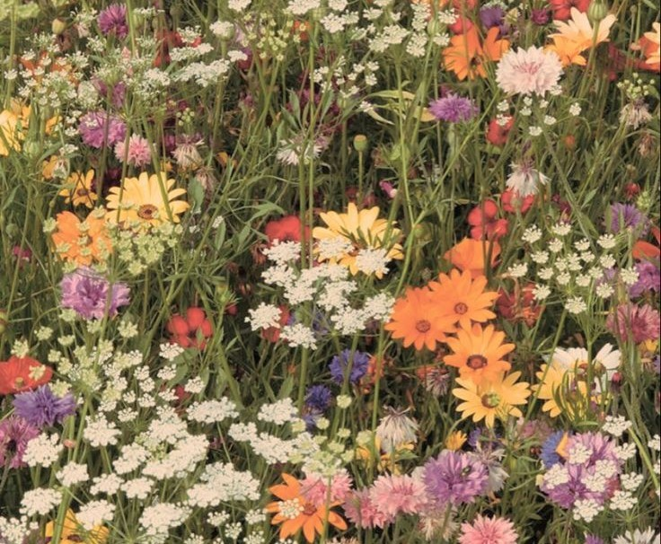
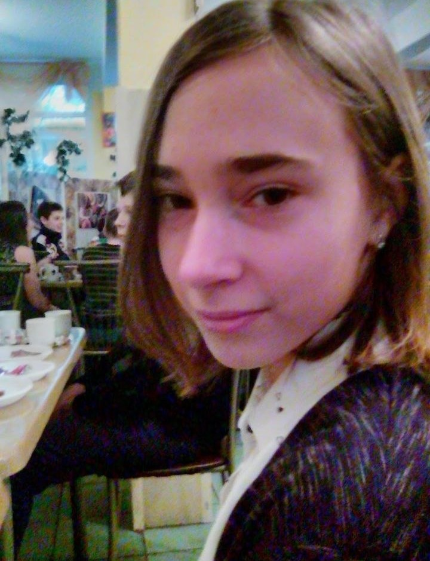
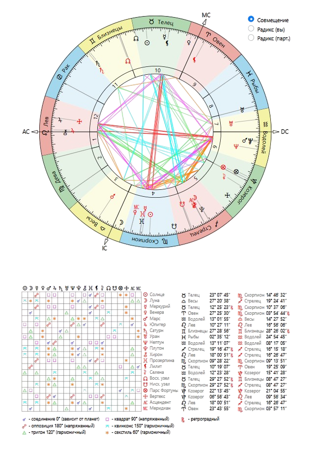
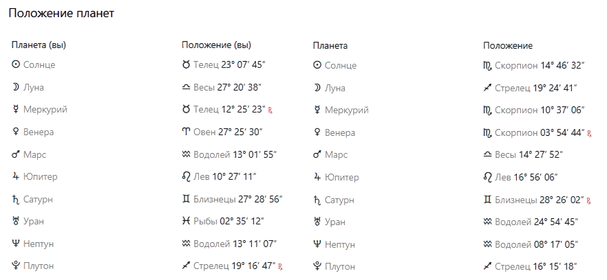

Natal chart


Квадрат Солнце — Юпитер
У вас с этой подругой довольно разные взгляды на то, как нужно жить, к чему стремиться и что вообще считать правильным. При этом вы обе достаточно уверены в своей позиции, поэтому разговоры на темы ценностей, жизненных принципов или серьёзных решений легко превращаются в долгие дискуссии. Не обязательно конфликтные, но каждая остаётся при своём мнении.
При этом именно благодаря этой разнице дружба может быть интересной. Вы расширяете горизонты друг друга, заставляете посмотреть на ситуацию под другим углом. Да, иногда одна может казаться другой слишком легкомысленной, а другая — слишком серьёзной или категоричной. Но поскольку дружба уже проверена временем, скорее всего вы давно научились принимать эти различия как часть характера друг друга.
Квадрат Солнце — Уран
Этот аспект часто встречается между людьми, которые одновременно очень привязаны друг к другу и периодически друг друга удивляют. Подруга может делать вещи, которые ты совершенно не ожидаешь, а ты, в свою очередь, можешь казаться ей слишком настойчивой в своих убеждениях или привычках.
Из-за этого в дружбе бывают периоды, когда хочется сказать: «Ну почему ты опять всё делаешь по-своему?» Но именно эта непохожесть не даёт отношениям стать скучными. Вы постоянно подталкивают друг друга к новым взглядам, новым идеям и выходу из зоны комфорта. Иногда это раздражает, но одновременно и помогает расти.
Оппозиция Меркурий — Меркурий
Вы можете бесконечно обсуждать одну и ту же тему и при этом приходить к совершенно разным выводам. Ваши способы мышления отличаются настолько, что порой кажется, будто вы смотрите на одну ситуацию из разных миров. То, что для одной очевидно, для другой требует долгих объяснений.
Но для давних подруг это не обязательно минус. Наоборот, у вас редко заканчиваются темы для разговоров. Вы можете спорить о фильмах, людях, жизненных решениях или планах на будущее и при этом сохранять интерес к мнению друг друга. Скорее всего, ваши лучшие беседы рождаются именно из различий, а не из полного согласия.
Квадрат Меркурий — Юпитер
Этот аспект добавляет в общение много споров о том, как «правильно» смотреть на жизнь. Одна из вас может мыслить более глобально и философски, другая — более практично и детально. Поэтому периодически возникают ситуации, когда одна говорит: «Думай шире», а другая отвечает: «Сначала разберёмся с реальностью».
У вас есть способность вдохновлять друг друга на новые идеи и планы. Проблема лишь в том, что иногда разговоров оказывается больше, чем действий. Вы можете вместе придумать грандиозный проект, поездку или мечту, а потом долго обсуждать детали вместо того, чтобы начать что-то делать.
Квадрат Меркурий — Нептун
Иногда между вами возникают недопонимания буквально на пустом месте. Одна что-то имела в виду одно, другая услышала совершенно другое, а потом обе удивляются, откуда вообще взялась обида или путаница. Особенно это касается тем, связанных с эмоциями и ожиданиями.
Зато этот аспект часто встречается у подруг, которые любят долгие разговоры о чувствах, психологии, мечтах и внутренних переживаниях. Вам может быть интересно обсуждать то, что другим людям кажется слишком абстрактным. Главное — не додумывать за друг друга, а иногда просто прямо спрашивать, что человек имел в виду. Тогда большинство недоразумений исчезает само собой.
Секстиль Венера — Сатурн
Это один из аспектов, который часто помогает дружбе проходить проверку временем. Между вами есть не только симпатия и приятное общение, но и ощущение надёжности. Даже если вы какое-то время не общаетесь каждый день, остаётся уверенность, что в сложной ситуации можно обратиться друг к другу за поддержкой.
Ваша дружба строится не только на эмоциях, но и на уважении. Вы умеете ценить сильные стороны друг друга, выполнять обещания и сохранять доверие. Именно такие аспекты часто встречаются у подруг, которые остаются рядом много лет, несмотря на изменения в жизни, работе или личных обстоятельствах.
Секстиль Венера — Уран
Этот аспект делает дружбе лёгкой и живой. Вам интересно вместе пробовать что-то новое, обсуждать необычные идеи, открывать новые места, увлечения или темы для разговоров. Рядом друг с другом появляется ощущение свободы — нет необходимости постоянно соответствовать каким-то ожиданиям.
При этом дружба не становится поверхностной. Наоборот, вы можете одновременно быть очень близкими людьми и сохранять уважение к личному пространству друг друга. Часто именно такой аспект создаёт ощущение, что подруга является не только близким человеком, но и настоящим единомышленником.
Тригон Марс — Марс
У вас очень похожий уровень энергии и активности. Когда нужно что-то организовать, решить проблему или просто собраться на какое-то мероприятие, вы обычно быстро находите общий ритм. Вам легко действовать вместе, потому что ваши способы добиваться целей во многом совпадают.
Этот аспект также показывает хорошую взаимную поддержку. Когда одна из вас теряет мотивацию, другая может помочь собраться и двигаться дальше. Вместе вы способны вдохновлять друг друга на развитие, новые достижения и просто более насыщенную жизнь.
Оппозиция Марс — Юпитер
Иногда в вашей дружбе возникает классическая ситуация: одна предлагает грандиозную идею, а другая сразу готова броситься её реализовывать, не особо задумываясь о последствиях. Из-за этого могут появляться спонтанные решения, которые потом приходится пересматривать.
Также бывают споры из-за разных подходов к риску и ответственности. Одна может считать другую слишком осторожной, а другая — слишком импульсивной. Но поскольку дружба уже давно существует, скорее всего вы постепенно научились компенсировать эти различия и даже извлекать из них пользу.
Соединение Марс — Нептун
Между вами может быть довольно сильное эмоциональное понимание, которое не всегда объясняется словами. Иногда вы чувствуете настроение друг друга ещё до того, как кто-то начинает о нём рассказывать. Благодаря этого в дружбе появляется особая глубина и доверительность.
Однако иногда этот аспект создаёт путаницу. Кто-то может ожидать понимания без объяснений или обижаться на то, что его чувства неправильно поняли. Поэтому самые важные разговоры между вами обычно становятся наиболее полезными именно тогда, когда вы открыто говорите о своих переживаниях, а не пытаетесь догадаться о них самостоятельно.
Оппозиция Юпитер – Нептун
Это один из тех аспектов, который в дружбе часто проявляется не как открытый конфликт, а как разница в мировоззрении. Вы можете смотреть на одну и ту же ситуацию совершенно по-разному: одна склонна верить в мечты, интуицию и ощущения, а другая старается искать логику, реальные возможности и практическую пользу. Из-за этого иногда возникают разговоры в духе: «Ну это же очевидно!» — хотя для второй стороны это совсем не очевидно.
Но поскольку вы уже давно дружите, этот аспект скорее учит вас расширять взгляды друг друга. Да, временами одна может считать другую слишком идеалистичной, а другая — слишком приземлённой. Зато именно благодаря этому вы способны видеть ситуацию с разных сторон. Главное — не пытаться доказать, кто из вас «правильно» воспринимает мир, а принимать, что ваши способы мышления просто отличаются.
Соединение Сатурн – Сатурн
Очень сильный показатель долгой дружбы. Обычно он встречается у людей одного поколения и создаёт ощущение, что вы проходите похожие жизненные этапы одновременно. У вас схожее понимание ответственности, обязанностей, серьёзных жизненных вопросов и того, что считается правильным или неправильным.
Этот аспект часто даёт надёжность. Даже если вы долго не общаетесь или у каждой начинается свой жизненный период, фундамент дружбы никуда не исчезает. Вы понимаете проблемы друг друга без лишних объяснений и можете поддержать именно тогда, когда это действительно нужно. Такая связь редко бывает поверхностной.
Тригон Сатурн – Уран
Очень интересное сочетание стабильности и новизны. Одна из вас может чаще предлагать необычные идеи, новые направления или нестандартные решения, а другая помогает сделать эти идеи реалистичными и осуществимыми. Благодаря этого вы хорошо дополняете друг друга.
В дружбе это проявляется так: вместе вы можете решиться на что-то, на что по отдельности не отважились бы. При этом ваши планы не превращаются в хаос, потому что всегда находится человек, который помогает структурувать происходящее. Такой аспект часто создаёт ощущение, что дружба помогает обеим развиваться и не стоять на месте.
Соединение Нептун – Нептун
Поскольку вы принадлежите примерно к одному поколению, у вас схожие мечты, культурные ориентиры, интерес к определённым темам и похожее восприятие многих глобальных процессов. Вам бывает легко понимать эмоциональный фон друг друга даже без слов.
Этот аспект редко создаёт яркие события сам по себе, но он даёт ощущение внутренней близости. Иногда вы можете обнаружить, что переживаете похожие кризисы, вдохновляетесь одними и теми же вещами или одновременно проходите через схожие этапы жизни. Это создаёт дополнительное чувство родства.
Соединение Плутон – Плутон
Ещё один поколенческий аспект, который говорит о схожем жизненном опыте и похожих внутренних трансформациях. Вы обе реагируете на серьёзные жизненные перемены примерно одинаковым образом и часто понимаете мотивы друг друга даже тогда, когда окружающим они кажутся странными.
В дружбе это создаёт ощущение, что вы выросли в похожей среде и прошли через похожие уроки. Вам легче обсуждать глубокие темы, серьёзные переживания и вопросы личностного роста. Именно поэтому даже спустя годы такая дружба может сохранять ощущение значимости и глубины.
Общий вывод по совместимости
Эта дружба выглядит довольно интересной: с одной стороны, между вами есть несколько напряжённых аспектов, связанных с общением и взглядами на жизнь (Солнце–Юпитер, Солнце–Уран, Меркурий–Меркурий, Меркурий–Юпитер, Меркурий–Нептун). Из-за них вы действительно можете часто спорить, по-разному оценивать ситуации и иногда удивляться логике друг друга.
Но при этом у вас очень много аспектов, которые удерживают дружбу на плаву: Венера–Сатурн, Венера–Уран, Mars–Mars, Mars–Pluto, Jupiter–Pluto, Сатурн–Уран и поколенческие соединения. Поэтому создаётся впечатление, что это не дружба «без конфликтов», а дружба, которая прошла через время и научилась принимать различия. Вы можете не всегда соглашаться друг с другом, но при этом оставаться важными людьми в жизни друг друга. Именно такие связи часто оказываются гораздо крепче, чем кажется со стороны.